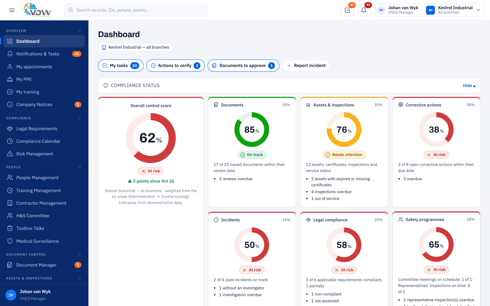
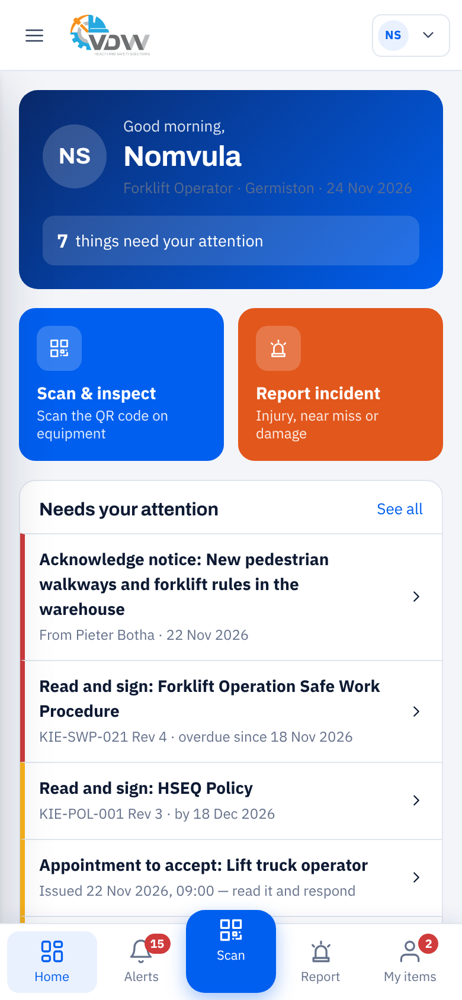

VDW Compliance Control System
Know what you must comply with under the Occupational Health and Safety Act — and stay compliant, every day.
Legal requirementsDocument controlAssets & inspectionsIncidentsCorrective actionsAuditsRiskPeople & trainingPPEEmployee app

